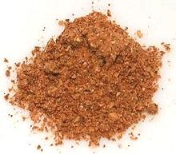

 |
Berbere Spice MixEritrea - Berbere | ||||
| Makes: Effort: Sched: DoAhead: |
1/2cup ** 15 min Yes |
The most essential spice mix for Ethiopian and Eritrean cuisines, Berbere has definite chili heat, but it is usually moderate (recipes vary). | |||
|
----- 1 1 6 3 ------ 6 1 1 1/4 ------ 1/2 3 1/2 ------ |
--- T t T --- in t c --- t T t --- |
-- Toasted Coriander Seeds Fenugreek Seeds Cardamom Allspice -- Grind Chilis, red (1) Cinnamon Peppercorns black Onion Flake -- Powdered Nutmeg Paprika Ginger Powder --------------- |
Make: - (15 min)
|